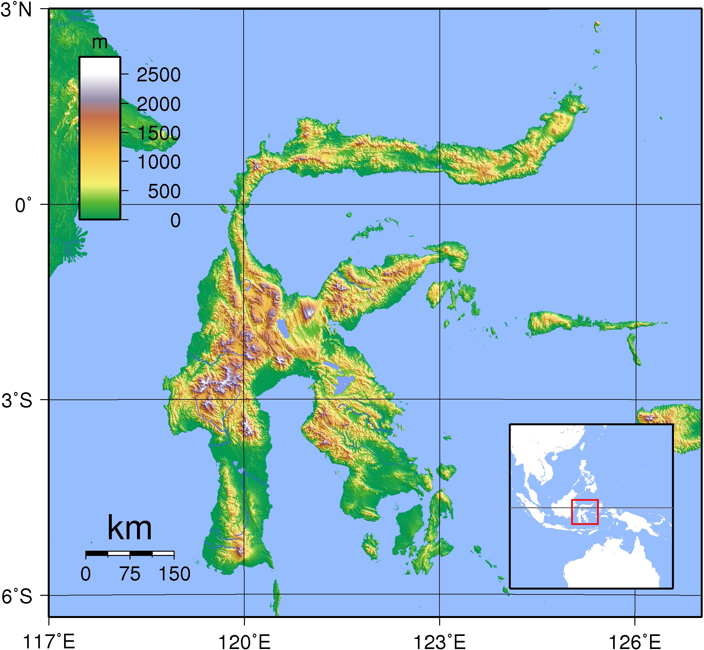

Gunung Tertinggi di Sulawesi
Pulau Sulawesi

Sulawesi
Sulawesi (baca: sulawési, IPA: [sulawesi]), dahulu pernah dikenal sebagai Celebes (/ˈsɛlɪbiːz/ atau /sɪˈliːbiːz/) adalah sebuah pulau di Indonesia. Sulawesi merupakan salah satu dari empat Kepulauan Sunda Besar dan merupakan pulau terbesar kesebelas di dunia. Pulau Sulawesi terletak di sebelah timur Pulau Kalimantan, sebelah barat Kepulauan Maluku, dan sebelah selatan Mindanao dan Kepulauan Sulu, Filipina. Di Indonesia, hanya Pulau Sumatra, Pulau Kalimantan, dan Papua yang lebih besar luas wilayahnya serta hanya Pulau Jawa, serta Pulau Sumatra yang memiliki populasi lebih banyak dari Sulawesi.
Bentang alam di Sulawesi mencakup empat semenanjung, yakni Semenanjung Utara, Semenanjung Timur, Semenanjung Selatan, dan Semenanjung Tenggara. Ada tiga teluk yang memisahkan semenanjung-semenanjung ini, yaitu Teluk Tomini (Teluk Gorontalo) yang membentang di wilayah perairan selatan dari Semenanjung Minahasa, Semenanjung Gorontalo, dan Semenanjung Tomini (Tomini Bocht), Teluk Tolo di antara Semenanjung Timur dan Tenggara, dan Teluk Bone di antara Semenanjung Selatan dan Tenggara. Selat Makassar membentang di sepanjang sisi barat pulau dan memisahkan pulau ini dari Kalimantan. Selain itu, Sulawesi juga terletak di antara pertemuan tiga lempeng, yakni Lempeng Eurasia, Lempeng Indo-Australia, dan Lempeng Pasifik. Hal ini menyebabkan Sulawesi memiliki struktur tektonik yang sangat kompleks.